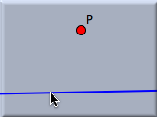
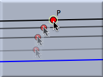
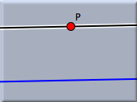

Add a Parallel
With this mode you can construct a line through a point parallel to another line with a press–drag–release sequence. The point through which the parallel should pass can also be generated in this mode. Constructing the parallel is a three-step procedure.
- Move the mouse over the line for which you want a parallel. Press the left mouse button. This creates the parallel and the point through which it should pass.
- Hold the left button and drag the mouse. This moves the parallel and the new point to the desired position.
- Release the mouse. Now the construction is frozen. Depending on the position at which you release the mouse, the definition of the new point is adapted:
- If the mouse pointer is over an existing point, then this point is taken.
- If the mouse pointer is over the intersection of two elements (line, circle, or conic), then this intersection is automatically constructed and taken as the new point.
- If the mouse pointer is over just one element (line or circle), then a point is constructed that is constrained to this element. This point is taken as the new point.
- Otherwise, a free point is added.
The figures below show the three stages during the construction of a parallel. Here the new point will be bound to the existing point
P.
Press the mouse …
| |
… drag it …
| |
… and release.
|
 | |
 | |
 |
Synopsis
Add a parallel mode creates a parallel with a press–drag–release sequence.
Caution
The behavior of this mode is dependent on the geometry that is chosen. While in Euclidean geometry there is always exactly one parallel, in non-Euclidean geometries the number of parallels is subject to the definition of parallelity. Depending on the underlying "philosophy," in hyperbolic geometry there can be infinitely many parallels, from an incidence-geometric viewpoint, or there can be exactly two parallels, from an algebraic or measurement-based point of view.
Cinderella takes the algebraic point of view:
A parallel to a line L is a line that creates a zero angle with L. So in hyperbolic geometry the mode produces exactly two parallels.
In elliptic geometry the usual viewpoint is that there are no parallels at all. However, from an algebraic standpoint there exist such parallels. It is just that they have complex coordinates. In other words, they will never be visible.
Cinderella constructs these parallels, and they are invisible but are nevertheless present in the
Construction Text view. From there they can be accessed for further constructions.